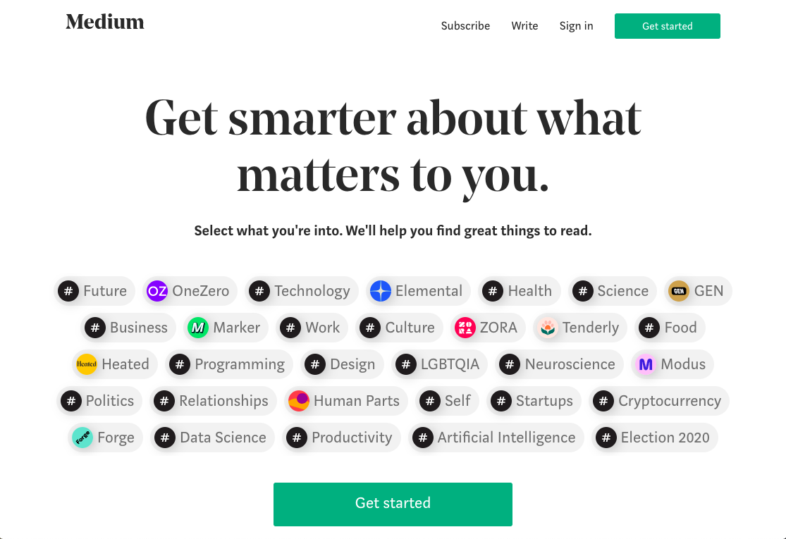

Sondage d'une page interface
Ceci est un sondage sur interface usager du Site Web de Craigslist.
Suit le lien ci-dessous pour voir le site Web a analyser.
https://calgary.craigslist.org/

Q1. Quelle est votre première impression de la mise en page du Site Web:
Q2. Quel aspect du Site Web nécessite le plus d'amélioration parmi les choix suivant:
Choix de couleur:
Proximité des liens:
Mise en page:
Q3. Selectionnez le but le plus reussi.
Cohérence
Fonctionnalité
Efficacité
Utilisabilité
Sécurité des données
Fiabilité
Q4. Pensez-vous facilement pouvoir utiliser ce Site Web?
Oui:
Non:
Q5. Pouvez-vous rapidement accomplir vos tâches sur ce Site Web
Oui:
Non:
Q6. Remplissez le tableau suivant.
Non-Satisfaisant
Neutre
Satisfaisant
Cohérence
Efficacité
Fonctionnalité
Fiabilité
Sécurité
Utilisabilité
Commentaire:
Submit
Site Web conçu par Jessie Detchou